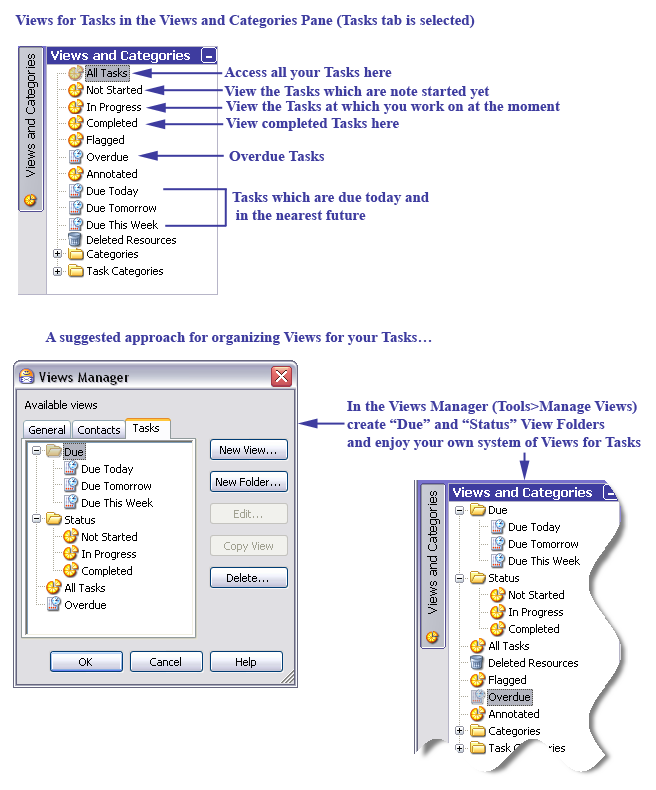
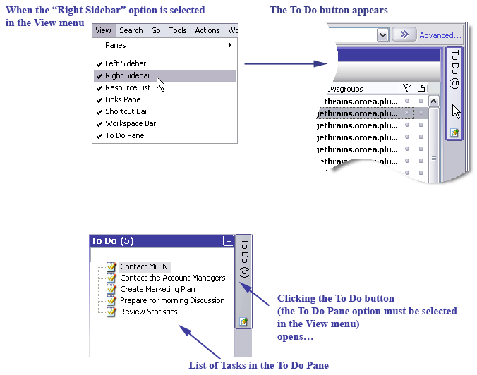
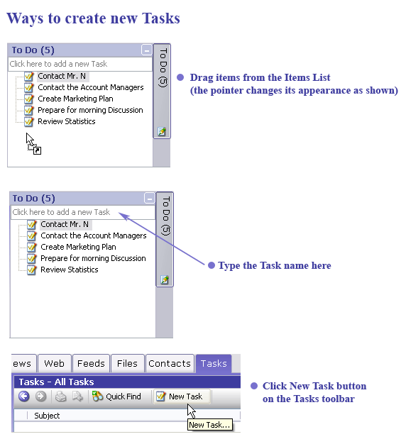
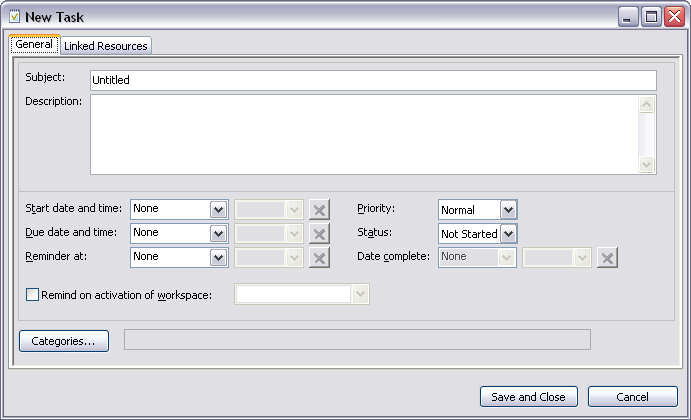
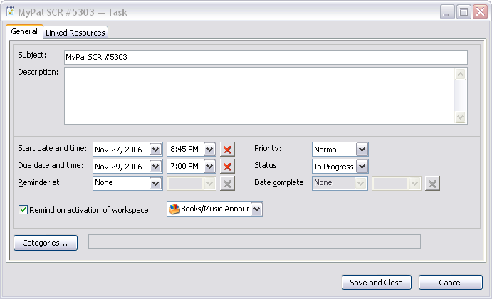
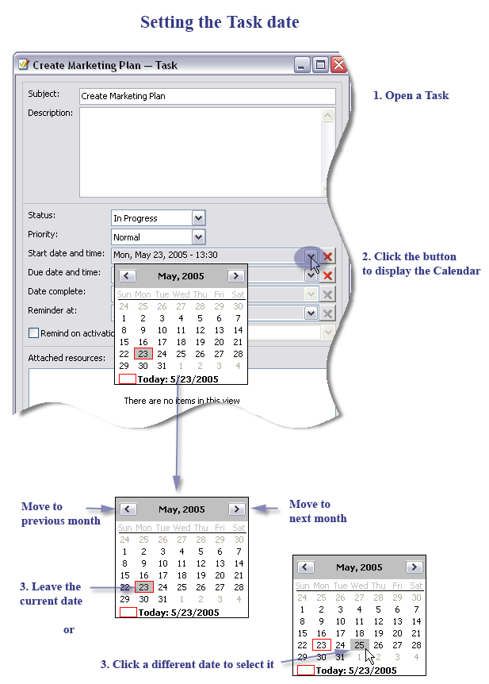
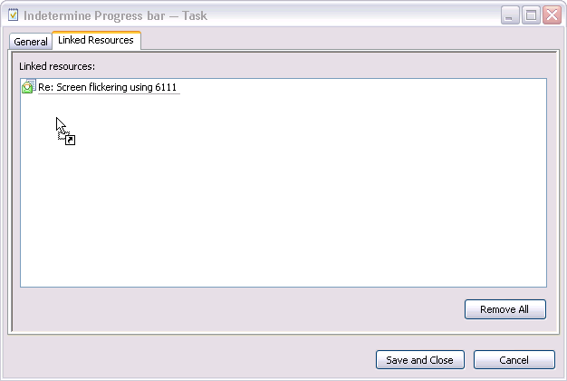
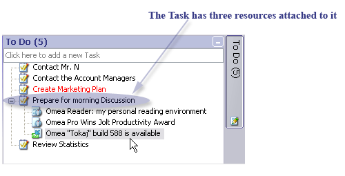
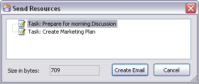

Organizing Using Tasks
A Task is a specific undertaking or project with a set of assigned resources and properties which status you need to track until it is completed. In other words, using a task means that messages on the necessary topic can be linked to one place as well as you can set a due date, a reminder, etc.
Viewing Tasks
You have two main options for viewing your Tasks:
- Tasks tab
- To Do pane
When you navigate to the Tasks tab, and expand the Views and Categories pane, you can access your Tasks in different views in this pane.
If the Views and Categories pane is not visible, open the Tasks tab and from the View menu, select Panes and then Views and Categories. The Views and Categories pane appears in the left-hand side of the main window and will show Views which are specific for Tasks.
To see all your Tasks, click the All Tasks View. To access all your completed Tasks, click the Completed View, and so on. See the figure below for more options for viewing your Tasks.

Views for Tasks and example of how you can organize these Views
To Do Pane
Another way to view your Tasks in the To Do pane. Here all your Tasks are brought together and unsorted, but still you can know their status by the Task name color (see later in this section).
To show the To Do pane, make sure that Right Sidebar option must be selected in the View menu, and then click the To Do button. There are shown only planned or ongoing tasks (tasks which have Not Started or In Progress status). Also their starting date property (Start Date and Time) should be already in the past or not set at all.
The number of Tasks which you have in Omea Pro is displayed in brackets in the To Do Pane (see picture above).

Showing the To Do pane and list of Tasks
To hide the Tasks list, click the "To Do" button again.
Creating a New Task
Creating a new Task involves these basic steps:
- Opening the New Task dialog (there are several ways to do that).
- Optionally specifying the Task’s properties such as status, priority, reminder and resources to associate with the Task (to attach to the Task).
You have several ways to create a new Omea Task.
- Create a task adding resource(s) at the same time
After selecting a resource or several resources drag and drop them into the To Do pane. Or you can select File | New | Task. The default Task name is the name of the last selected resource. Resources bundled to the newly created task are shown in the Attached Resource panel. - Create a task with specified name
Just place the mouse pointer in the "Click here to add a new Task" field of the To Do pane and press Enter to create a task with the entered subject. - Click the New Task button on the Tasks Items List toolbar.

Several ways to create Tasks in Omea
New Task form appears after you:
- click New Task button on the Tasks toolbar
- from the File menu, select New>Task
- press Ctrl + T
- press Ins while keyboard focus is located in the tasks list
- drag the resources from the Items List to the To Do Pane
If you click Shift + Ins while any task is selected, a new Subtask will be created right under the selected one.
After you perform one of these actions, the New Task dialog opens in which you can
- change a new Task name,
- type its description,
- set status, priority, start and due date and time,
- specify date complete
- customize the reminder properties
- assign Category for your Task (press Categories and select one or more Categories in the Assign Categories dialog)
- attach resources to the Task (i.e. associate some items with the Task) in the Linked Resources tab. If you dragged the items from the Items List or pressed Ctrl+T when some item was selected, the resource is attached to the task automatically.

New Task dialog
After you have made all necessary changes in this dialog, click Save and Close. The Task will be saved and you can preview and access them it in the Items List of the Tasks tab and in the To Do pane and in corresponding Views of the Views and Categories pane.
Editing Task Properties
To edit the Task properties:
- Double-click the task in the To Do pane or the Tasks tab
- Select the task in the To Do pane or the Tasks tab, right-click it and select Open
- Press the Edit Task button in the Task preview panel
- Select the desired View in the Views and Categories pane of the Tasks tab
The Edit Task dialog appears (the dialog name corresponds to the name of the Task).

The Task Edit button is always visible no matter how the Task preview panel is resized.
Defining Task Properties
- The Task Name and Description are shown in the text fields. Just type in the changes you need.
- The Task Status and Priority values are set using the drop-down lists. The Task Status affects in which folder of the Views and Categories pane the task is located (see Views for Tasks in the Views and Categories pane).
- You can use these options to set when the task is to be started, be completed, or when you need to be reminded on this task.
- The Date complete property is set automatically when that Task status is changed to Completed but you can edit it then if you need to. To mark the Task as completed you can either select the Completed from the Status drop-down list of the New/Edit Task dialog or right-click the Task in the To Do panel or Tasks tab and select Mark Completed, or press Ctrl + K.
- To set the desired date and/or time, click a text field corresponding to the desired property. The current date and/or time appear in the corresponding text field. You can change them manually directly in the text field (but you should follow the shown format). Or to change the date press the corresponding list button and select the desired value in the popup calendar. To reset the date/time, press the cross-button next to the desired text field.
- If you have several Workspaces, you can set Omea to remind you on the in corresponding workspace. Check the Remind on activation of workspace option and select the desired Workspace from the drop-down list.
Reminders
Reminder is a special message linked to the task which pops up at a set time or after a set period of time.
If Omea Pro is not running, the due reminder appears immediately after it is launched. If the reminder is not explicitly canceled, it appears after Omea Pro is restarted.
The reminder shows the name of the task, its description and the list of the attached resources. You can call the Edit Task dialog pressing the Edit Task button in the Reminder message.
The Snooze function enables you to set a time period after which the reminder window is to appear again.
The time period is calculated starting not from the current time but from the time specified in the Reminder field of the Edit Task dialog.
To use the Snooze function, select a desired time interval in the drop-down list and press Snooze. The reminder will appear regularly after the set periods of time until you change it or dismiss the reminder.
To cancel the reminder, press Dismiss. After that the reminder is never shown again until you set a new time.
Linking Resources to a Task
You can link the necessary resources to the Task to have everything you need to perform a Task but in one place. To do so:
- Drag the resource from the Items List of the corresponding resource tab and drop a resource to the task in the To Do pane,
- Double-click the existing Task or click the New Task button. Select the Linked Resources tab. Navigate to the desired resource in Omea (click the appropriate resource tab and select the item in the Items List), click the resource and drag it to the New Task or Edit Task window and drop it to the Attached Resources area. As you do it, the mouse pointer changes as shown on picture below
- Select a resource in the Items List of the corresponding resource tab and from the Actions menu, select Add Link… to place the resource into the Resource Clipboard to drag and drop it to the necessary Task in the Tasks tab or the To Do pane. This is especially useful for the Tasks not shown in the To Do pane.

Once you have connected some resources to the Task, the resources will be displayed under the Task name in the To Do pane and in the Attached resources area of the New/Edit Task dialog.

To disconnect a resource from the Task, double-click the Task in the To Do pane or in the Tasks Items List and in the Edit Task dialog which opens either press Del(ete) or right-click it and select Remove from Task on the shortcut menu. Another way is to right-click the resource in the Edit Task dialog and press Del(ete) or right-click it and select Remove from Task on the shortcut menu.
Removing a Task from the Task List
To remove a task, select it in the Tasks tab or To Do pane and either press Del(ete) or right-click it and select Del(ete) in the context menu.
Viewing Task Status and Priority in the To Do Pane
Perhaps you have noticed that the font color of the Tasks in the To Do pane is changed.
For example, when the Task is overdue (its Due date has passed), the Task title has red color in the To Do pane.
If the Task has low priority, the lower left corner of its icon is marked with blue dot .
If the Task has high priority, the lower left corner of the Task icon is marked with a red dot .
Cloning a Task
Sometimes you need to create several tasks, attach the same resources and assign identical categories to them. To do this you do not need to create all tasks one by one but rather create the first task, assign necessary categories and attach resources to it and then clone this task. Afterwards you can rename and modify it.
To clone a task:
- Locate the Task you want to clone and select it in the Items List or the To Do list.
- Right-click and choose Clone Task on the context menu.
Sending a Task to Someone Else
You can send any of your Tasks to other Omea Pro users via e-mail. The forwarded tasks are transformed in a special data file which is automatically attached to the e-mail message. The mail recipient can import the data from the attachment in to his or her copy of Omea Pro to create a new Task or Tasks in his/her installation from the attached Task data file.
To send a Task to another Omea Pro user:
- Locate the Task you want to send and select it in the Items List or the To Do list. You can optionally select multiple Tasks (by pressing and holding down either Ctrl or Shift buttons).
-
Right-click and choose Send Resources on the context
menu.
The Send Resources dialog appears.

The Send Resources dialog for Task
- The dialog lists all the Tasks you selected. Click the Create Email button. A new e-mail message is created with a file attachment named resourcetransfer.xml
- Type the address of the desired recipient(s), provide a Subject, write some text in the message body, and click Send to send the message.
Importing a Task someone has sent you
If another Omea Pro user sends you a task by e-mail, when you view the message in the Item Viewer of the Mail tab, you will see a bar like the following at the top of the pane:
Click to receive attached resources
Click the link to receive the attached Task and import it to your To Do list.
You can perform such actions as opening the task, applying multiple organizational features or deleting a Task if you right-click the task in the Preview pane and select the desired action on the pop-up menu.
See also: